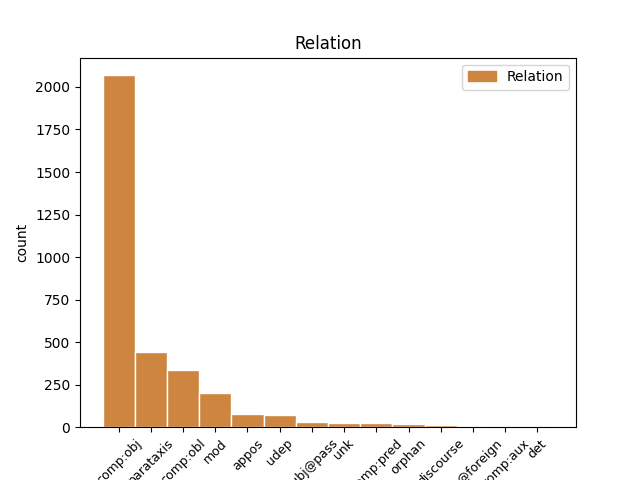
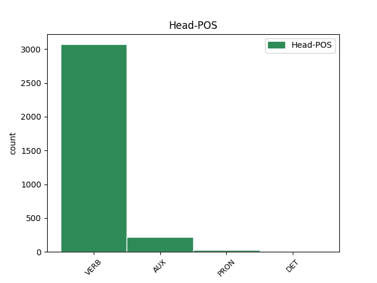
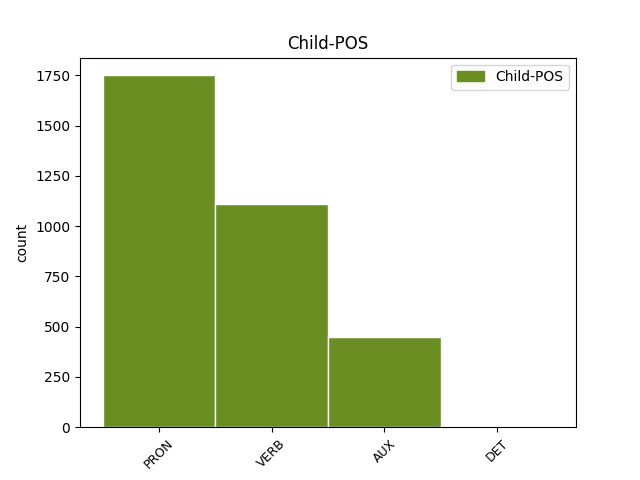

Distribution of features within this leaf



Agreement Rules sorted by frequency.
- When the dependent token is the direct object complements(comp:obj) of the head token, and the dependent token is PRON.
1 Jestliže _ _ _ _ 0 _ _ _
2 se _ _ _ _ 0 _ _ _
3 nějaká _ _ _ _ 0 _ _ _
4 planetka _ _ _ _ 0 _ _ _
5 nápadně _ _ _ _ 0 _ _ _
6 přiblíží _ _ _ _ 0 _ _ _
7 k _ _ _ _ 0 _ _ _
8 Zemi _ _ _ _ 0 _ _ _
9 , _ _ _ _ 0 _ _ _
10 pak _ _ _ _ 0 _ _ _
11 si _ _ _ _ 0 _ _ _
12 můžeme _ _ _ _ 0 _ _ _
13 být _ _ _ _ 0 _ _ _
14 jisti _ _ _ _ 0 _ _ _
15 , _ _ _ _ 0 _ _ _
16 že _ _ _ _ 0 _ _ _
17 nás _ _ _ _ 0 _ _ _
18 už _ _ _ _ 0 _ _ _
19 hned _ _ _ _ 0 _ _ _
20 tak _ _ _ _ 0 _ _ _
21 netrefí _ _ _ _ 0 _ _ _
22 , _ _ _ _ 0 _ _ _
23 neboť _ _ _ _ 0 _ _ _
24 gravitační _ _ _ _ 0 _ _ _
25 poruchy _ _ _ _ 0 _ _ _
26 Země _ _ _ _ 0 _ _ _
27 ji on PRON PPFS4--3------- Case=Acc|Gender=Fem|Number=Sing|Person=3|PronType=Prs 29 comp:obj _ LId=on-1
28 prostě _ _ _ _ 0 _ _ _
29 odstrčí odstrčit VERB VB-P---3P-AA--- Aspect=Perf|Mood=Ind|Number=Plur|Person=3|Polarity=Pos|Tense=Pres|VerbForm=Fin|Voice=Act 0 _ _ _
30 pryč _ _ _ _ 0 _ _ _
31 . _ _ _ _ 0 _ _ _
1 Teorie _ _ _ _ 0 _ _ _
2 vědy _ _ _ _ 0 _ _ _
3 ukazuje ukazovat VERB VB-S---3P-AA--- Aspect=Imp|Mood=Ind|Number=Sing|Person=3|Polarity=Pos|Tense=Pres|VerbForm=Fin|Voice=Act 0 _ _ _
4 , _ _ _ _ 0 _ _ _
5 jak _ _ _ _ 0 _ _ _
6 zdánlivě _ _ _ _ 0 _ _ _
7 odtažitý _ _ _ _ 0 _ _ _
8 subjekt _ _ _ _ 0 _ _ _
9 může moci VERB VB-S---3P-AA--- Mood=Ind|Number=Sing|Person=3|Polarity=Pos|Tense=Pres|VerbForm=Fin|Voice=Act 3 comp:obj _ LGloss=(mít_možnost_[něco_dělat])
10 být _ _ _ _ 0 _ _ _
11 překvapivě _ _ _ _ 0 _ _ _
12 aktuální _ _ _ _ 0 _ _ _
13 pro _ _ _ _ 0 _ _ _
14 lidskou _ _ _ _ 0 _ _ _
15 společnost _ _ _ _ 0 _ _ _
16 na _ _ _ _ 0 _ _ _
17 konci _ _ _ _ 0 _ _ _
18 20 _ _ _ _ 0 _ _ _
19 . _ _ _ _ 0 _ _ _
20 století _ _ _ _ 0 _ _ _
21 . _ _ _ _ 0 _ _ _
1 Manévr _ _ _ _ 0 _ _ _
2 zmenšuje zmenšovat VERB VB-S---3P-AA--- Aspect=Imp|Mood=Ind|Number=Sing|Person=3|Polarity=Pos|Tense=Pres|VerbForm=Fin|Voice=Act 0 _ _ _
3 riziko _ _ _ _ 0 _ _ _
4 rozbití _ _ _ _ 0 _ _ _
5 planetky _ _ _ _ 0 _ _ _
6 na _ _ _ _ 0 _ _ _
7 více _ _ _ _ 0 _ _ _
8 kusů _ _ _ _ 0 _ _ _
9 , _ _ _ _ 0 _ _ _
10 ale _ _ _ _ 0 _ _ _
11 současně _ _ _ _ 0 _ _ _
12 zvyšuje zvyšovat VERB VB-S---3P-AA--- Aspect=Imp|Mood=Ind|Number=Sing|Person=3|Polarity=Pos|Tense=Pres|VerbForm=Fin|Voice=Act 2 parataxis _ _
13 energetickou _ _ _ _ 0 _ _ _
14 náročnost _ _ _ _ 0 _ _ _
15 " _ _ _ _ 0 _ _ _
16 úpravy _ _ _ _ 0 _ _ _
17 " _ _ _ _ 0 _ _ _
18 dráhy _ _ _ _ 0 _ _ _
19 zhruba _ _ _ _ 0 _ _ _
20 o _ _ _ _ 0 _ _ _
21 dva _ _ _ _ 0 _ _ _
22 řády _ _ _ _ 0 _ _ _
23 , _ _ _ _ 0 _ _ _
24 čili _ _ _ _ 0 _ _ _
25 jsme _ _ _ _ 0 _ _ _
26 opět _ _ _ _ 0 _ _ _
27 u _ _ _ _ 0 _ _ _
28 100 _ _ _ _ 0 _ _ _
29 Mt _ _ _ _ 0 _ _ _
30 TNT _ _ _ _ 0 _ _ _
31 ! _ _ _ _ 0 _ _ _
1 Sám _ _ _ _ 0 _ _ _
2 Popper _ _ _ _ 0 _ _ _
3 flirtuje _ _ _ _ 0 _ _ _
4 s _ _ _ _ 0 _ _ _
5 metafyzikou _ _ _ _ 0 _ _ _
6 , _ _ _ _ 0 _ _ _
7 když _ _ _ _ 0 _ _ _
8 tvrdí tvrdit VERB VB-S---3P-AA--- Aspect=Imp|Mood=Ind|Number=Sing|Person=3|Polarity=Pos|Tense=Pres|VerbForm=Fin|Voice=Act 0 _ _ _
9 : _ _ _ _ 0 _ _ _
10 " _ _ _ _ 0 _ _ _
11 Vědecký _ _ _ _ 0 _ _ _
12 objev _ _ _ _ 0 _ _ _
13 je být AUX VB-S---3P-AA--- Mood=Ind|Number=Sing|Person=3|Polarity=Pos|Tense=Pres|VerbForm=Fin|Voice=Act 8 comp:obj _ _
14 nemožný _ _ _ _ 0 _ _ _
15 bez _ _ _ _ 0 _ _ _
16 víry _ _ _ _ 0 _ _ _
17 v _ _ _ _ 0 _ _ _
18 myšlenky _ _ _ _ 0 _ _ _
19 čistě _ _ _ _ 0 _ _ _
20 spekulativní _ _ _ _ 0 _ _ _
21 povahy _ _ _ _ 0 _ _ _
22 . _ _ _ _ 0 _ _ _
23 . _ _ _ _ 0 _ _ _
24 . _ _ _ _ 0 _ _ _
25 víry _ _ _ _ 0 _ _ _
26 , _ _ _ _ 0 _ _ _
27 která _ _ _ _ 0 _ _ _
28 je _ _ _ _ 0 _ _ _
29 zcela _ _ _ _ 0 _ _ _
30 nepodložená _ _ _ _ 0 _ _ _
31 z _ _ _ _ 0 _ _ _
32 hlediska _ _ _ _ 0 _ _ _
33 vědy _ _ _ _ 0 _ _ _
34 , _ _ _ _ 0 _ _ _
35 a _ _ _ _ 0 _ _ _
36 je _ _ _ _ 0 _ _ _
37 proto _ _ _ _ 0 _ _ _
38 , _ _ _ _ 0 _ _ _
39 do _ _ _ _ 0 _ _ _
40 jisté _ _ _ _ 0 _ _ _
41 míry _ _ _ _ 0 _ _ _
42 , _ _ _ _ 0 _ _ _
43 " _ _ _ _ 0 _ _ _
44 metafyzická _ _ _ _ 0 _ _ _
45 " _ _ _ _ 0 _ _ _
46 . _ _ _ _ 0 _ _ _
1 Proto _ _ _ _ 0 _ _ _
2 se _ _ _ _ 0 _ _ _
3 ale _ _ _ _ 0 _ _ _
4 sportovci _ _ _ _ 0 _ _ _
5 uchylují _ _ _ _ 0 _ _ _
6 i _ _ _ _ 0 _ _ _
7 k _ _ _ _ 0 _ _ _
8 zakázanému _ _ _ _ 0 _ _ _
9 krevnímu _ _ _ _ 0 _ _ _
10 dopingu _ _ _ _ 0 _ _ _
11 : _ _ _ _ 0 _ _ _
12 několik _ _ _ _ 0 _ _ _
13 týdnů _ _ _ _ 0 _ _ _
14 před _ _ _ _ 0 _ _ _
15 závodem _ _ _ _ 0 _ _ _
16 si _ _ _ _ 0 _ _ _
17 nechají _ _ _ _ 0 _ _ _
18 odebrat _ _ _ _ 0 _ _ _
19 krev _ _ _ _ 0 _ _ _
20 a _ _ _ _ 0 _ _ _
21 schovají _ _ _ _ 0 _ _ _
22 si _ _ _ _ 0 _ _ _
23 ji _ _ _ _ 0 _ _ _
24 ( _ _ _ _ 0 _ _ _
25 resp _ _ _ _ 0 _ _ _
26 . _ _ _ _ 0 _ _ _
27 jejich _ _ _ _ 0 _ _ _
28 sportovní _ _ _ _ 0 _ _ _
29 lékaři _ _ _ _ 0 _ _ _
30 jim on PRON PPXP3--3------- Case=Dat|Number=Plur|Person=3|PronType=Prs 32 comp:obl _ LId=on-1
31 ji _ _ _ _ 0 _ _ _
32 schovají schovat VERB VB-P---3P-AA--- Aspect=Perf|Mood=Ind|Number=Plur|Person=3|Polarity=Pos|Tense=Pres|VerbForm=Fin|Voice=Act 0 _ _ _
33 ) _ _ _ _ 0 _ _ _
34 v _ _ _ _ 0 _ _ _
35 ledničce _ _ _ _ 0 _ _ _
36 . _ _ _ _ 0 _ _ _
1 Oči _ _ _ _ 0 _ _ _
2 proto _ _ _ _ 0 _ _ _
3 , _ _ _ _ 0 _ _ _
4 že _ _ _ _ 0 _ _ _
5 nadbytek _ _ _ _ 0 _ _ _
6 kyslíku _ _ _ _ 0 _ _ _
7 při _ _ _ _ 0 _ _ _
8 oživování _ _ _ _ 0 _ _ _
9 novorozenců _ _ _ _ 0 _ _ _
10 brzdí brzdit VERB VB-S---3P-AA--- Aspect=Imp|Mood=Ind|Number=Sing|Person=3|Polarity=Pos|Tense=Pres|VerbForm=Fin|Voice=Act 0 _ _ _
11 vývoj _ _ _ _ 0 _ _ _
12 cév _ _ _ _ 0 _ _ _
13 v _ _ _ _ 0 _ _ _
14 sítnici _ _ _ _ 0 _ _ _
15 oka _ _ _ _ 0 _ _ _
16 : _ _ _ _ 0 _ _ _
17 cévy _ _ _ _ 0 _ _ _
18 se _ _ _ _ 0 _ _ _
19 nemusí muset VERB VB-P---3P-NA--1 Mood=Ind|Number=Plur|Person=3|Polarity=Neg|Tense=Pres|VerbForm=Fin|Voice=Act 10 mod _ _
20 tolik _ _ _ _ 0 _ _ _
21 tvořit _ _ _ _ 0 _ _ _
22 , _ _ _ _ 0 _ _ _
23 aby _ _ _ _ 0 _ _ _
24 by _ _ _ _ 0 _ _ _
25 prokrvení _ _ _ _ 0 _ _ _
26 sítnice _ _ _ _ 0 _ _ _
27 zajistily _ _ _ _ 0 _ _ _
28 . _ _ _ _ 0 _ _ _
1 Protože _ _ _ _ 0 _ _ _
2 v _ _ _ _ 0 _ _ _
3 moderní _ _ _ _ 0 _ _ _
4 industriální _ _ _ _ 0 _ _ _
5 společnosti _ _ _ _ 0 _ _ _
6 ( _ _ _ _ 0 _ _ _
7 alespoň _ _ _ _ 0 _ _ _
8 zatím _ _ _ _ 0 _ _ _
9 ) _ _ _ _ 0 _ _ _
10 převládá _ _ _ _ 0 _ _ _
11 téměř _ _ _ _ 0 _ _ _
12 všeobjímající _ _ _ _ 0 _ _ _
13 rozrůstání _ _ _ _ 0 _ _ _
14 a _ _ _ _ 0 _ _ _
15 zřetězování _ _ _ _ 0 _ _ _
16 ekleziomorfních _ _ _ _ 0 _ _ _
17 struktur _ _ _ _ 0 _ _ _
18 a _ _ _ _ 0 _ _ _
19 jejich _ _ _ _ 0 _ _ _
20 analogií _ _ _ _ 0 _ _ _
21 a _ _ _ _ 0 _ _ _
22 typicky _ _ _ _ 0 _ _ _
23 mužské _ _ _ _ 0 _ _ _
24 vzorce _ _ _ _ 0 _ _ _
25 chování _ _ _ _ 0 _ _ _
26 jsou být AUX VB-P---3P-AA--- Mood=Ind|Number=Plur|Person=3|Polarity=Pos|Tense=Pres|VerbForm=Fin|Voice=Act 0 _ _ _
27 vytlačeny _ _ _ _ 0 _ _ _
28 z _ _ _ _ 0 _ _ _
29 reálného _ _ _ _ 0 _ _ _
30 světa _ _ _ _ 0 _ _ _
31 tak _ _ _ _ 0 _ _ _
32 nanejvýš _ _ _ _ 0 _ _ _
33 do _ _ _ _ 0 _ _ _
34 filmových _ _ _ _ 0 _ _ _
35 seriálů _ _ _ _ 0 _ _ _
36 ( _ _ _ _ 0 _ _ _
37 bojující _ _ _ _ 0 _ _ _
38 armáda _ _ _ _ 0 _ _ _
39 jako _ _ _ _ 0 _ _ _
40 jejich _ _ _ _ 0 _ _ _
41 pokleslá _ _ _ _ 0 _ _ _
42 realizace _ _ _ _ 0 _ _ _
43 je být AUX VB-S---3P-AA--- Mood=Ind|Number=Sing|Person=3|Polarity=Pos|Tense=Pres|VerbForm=Fin|Voice=Act 26 parataxis _ _
44 záležitostí _ _ _ _ 0 _ _ _
45 příliš _ _ _ _ 0 _ _ _
46 riskantní _ _ _ _ 0 _ _ _
47 ) _ _ _ _ 0 _ _ _
48 , _ _ _ _ 0 _ _ _
49 vznáší _ _ _ _ 0 _ _ _
50 se _ _ _ _ 0 _ _ _
51 nezrealizovaná _ _ _ _ 0 _ _ _
52 část _ _ _ _ 0 _ _ _
53 těchto _ _ _ _ 0 _ _ _
54 etologických _ _ _ _ 0 _ _ _
55 úkonů _ _ _ _ 0 _ _ _
56 nad _ _ _ _ 0 _ _ _
57 celou _ _ _ _ 0 _ _ _
58 společností _ _ _ _ 0 _ _ _
59 jako _ _ _ _ 0 _ _ _
60 hustá _ _ _ _ 0 _ _ _
61 mlha _ _ _ _ 0 _ _ _
62 a _ _ _ _ 0 _ _ _
63 vede _ _ _ _ 0 _ _ _
64 celou _ _ _ _ 0 _ _ _
65 společnost _ _ _ _ 0 _ _ _
66 k _ _ _ _ 0 _ _ _
67 jejich _ _ _ _ 0 _ _ _
68 napodobování _ _ _ _ 0 _ _ _
69 . _ _ _ _ 0 _ _ _
1 Proto _ _ _ _ 0 _ _ _
2 se _ _ _ _ 0 _ _ _
3 ale _ _ _ _ 0 _ _ _
4 sportovci _ _ _ _ 0 _ _ _
5 uchylují _ _ _ _ 0 _ _ _
6 i _ _ _ _ 0 _ _ _
7 k _ _ _ _ 0 _ _ _
8 zakázanému _ _ _ _ 0 _ _ _
9 krevnímu _ _ _ _ 0 _ _ _
10 dopingu _ _ _ _ 0 _ _ _
11 : _ _ _ _ 0 _ _ _
12 několik _ _ _ _ 0 _ _ _
13 týdnů _ _ _ _ 0 _ _ _
14 před _ _ _ _ 0 _ _ _
15 závodem _ _ _ _ 0 _ _ _
16 si _ _ _ _ 0 _ _ _
17 nechají _ _ _ _ 0 _ _ _
18 odebrat _ _ _ _ 0 _ _ _
19 krev _ _ _ _ 0 _ _ _
20 a _ _ _ _ 0 _ _ _
21 schovají schovat VERB VB-P---3P-AA--- Aspect=Perf|Mood=Ind|Number=Plur|Person=3|Polarity=Pos|Tense=Pres|VerbForm=Fin|Voice=Act 0 _ _ _
22 si _ _ _ _ 0 _ _ _
23 ji _ _ _ _ 0 _ _ _
24 ( _ _ _ _ 0 _ _ _
25 resp _ _ _ _ 0 _ _ _
26 . _ _ _ _ 0 _ _ _
27 jejich _ _ _ _ 0 _ _ _
28 sportovní _ _ _ _ 0 _ _ _
29 lékaři _ _ _ _ 0 _ _ _
30 jim _ _ _ _ 0 _ _ _
31 ji _ _ _ _ 0 _ _ _
32 schovají schovat VERB VB-P---3P-AA--- Aspect=Perf|Mood=Ind|Number=Plur|Person=3|Polarity=Pos|Tense=Pres|VerbForm=Fin|Voice=Act 21 appos _ SpaceAfter=No
33 ) _ _ _ _ 0 _ _ _
34 v _ _ _ _ 0 _ _ _
35 ledničce _ _ _ _ 0 _ _ _
36 . _ _ _ _ 0 _ _ _
1 nicméně _ _ _ _ 0 _ _ _
2 také _ _ _ _ 0 _ _ _
3 jim on PRON PPXP3--3------- Case=Dat|Number=Plur|Person=3|PronType=Prs 7 udep _ LId=on-1
4 se _ _ _ _ 0 _ _ _
5 ke _ _ _ _ 0 _ _ _
6 zlému _ _ _ _ 0 _ _ _
7 přimísí přimísit VERB VB-S---3P-AA--- Aspect=Perf|Mood=Ind|Number=Sing|Person=3|Polarity=Pos|Tense=Pres|VerbForm=Fin|Voice=Act 0 _ _ _
8 dobré _ _ _ _ 0 _ _ _
9 . _ _ _ _ 0 _ _ _
1 Tam _ _ _ _ 0 _ _ _
2 , _ _ _ _ 0 _ _ _
3 kde _ _ _ _ 0 _ _ _
4 je být AUX VB-S---3P-AA--- Mood=Ind|Number=Sing|Person=3|Polarity=Pos|Tense=Pres|VerbForm=Fin|Voice=Act 11 mod _ _
5 hustota _ _ _ _ 0 _ _ _
6 okolního _ _ _ _ 0 _ _ _
7 chladného _ _ _ _ 0 _ _ _
8 plynu _ _ _ _ 0 _ _ _
9 nízká _ _ _ _ 0 _ _ _
10 , _ _ _ _ 0 _ _ _
11 nenaráží narážet VERB VB-S---3P-NA--- Aspect=Imp|Mood=Ind|Number=Sing|Person=3|Polarity=Neg|Tense=Pres|VerbForm=Fin|Voice=Act 0 _ _ _
12 rozpínání _ _ _ _ 0 _ _ _
13 na _ _ _ _ 0 _ _ _
14 velký _ _ _ _ 0 _ _ _
15 odpor _ _ _ _ 0 _ _ _
16 . _ _ _ _ 0 _ _ _
1 ( _ _ _ _ 0 _ _ _
2 Výraz _ _ _ _ 0 _ _ _
3 smysl _ _ _ _ 0 _ _ _
4 používám _ _ _ _ 0 _ _ _
5 v _ _ _ _ 0 _ _ _
6 tom _ _ _ _ 0 _ _ _
7 významu _ _ _ _ 0 _ _ _
8 , _ _ _ _ 0 _ _ _
9 že _ _ _ _ 0 _ _ _
10 jazykový _ _ _ _ 0 _ _ _
11 výraz _ _ _ _ 0 _ _ _
12 má mít VERB VB-S---3P-AA--- Mood=Ind|Number=Sing|Person=3|Polarity=Pos|Tense=Pres|VerbForm=Fin|Voice=Act 0 _ _ _
13 význam _ _ _ _ 0 _ _ _
14 , _ _ _ _ 0 _ _ _
15 což _ _ _ _ 0 _ _ _
16 je být AUX VB-S---3P-AA--- Mood=Ind|Number=Sing|Person=3|Polarity=Pos|Tense=Pres|VerbForm=Fin|Voice=Act 12 appos _ _
17 jeho _ _ _ _ 0 _ _ _
18 smysl _ _ _ _ 0 _ _ _
19 nebo _ _ _ _ 0 _ _ _
20 jeho _ _ _ _ 0 _ _ _
21 denotát _ _ _ _ 0 _ _ _
22 , _ _ _ _ 0 _ _ _
23 popřípadě _ _ _ _ 0 _ _ _
24 obojí _ _ _ _ 0 _ _ _
25 . _ _ _ _ 0 _ _ _
26 ) _ _ _ _ 0 _ _ _
1 Dnes _ _ _ _ 0 _ _ _
2 se _ _ _ _ 0 _ _ _
3 již _ _ _ _ 0 _ _ _
4 ví vědět VERB VB-S---3P-AA--- Mood=Ind|Number=Sing|Person=3|Polarity=Pos|Tense=Pres|VerbForm=Fin|Voice=Act 0 _ _ _
5 , _ _ _ _ 0 _ _ _
6 odkud _ _ _ _ 0 _ _ _
7 nové _ _ _ _ 0 _ _ _
8 buňky _ _ _ _ 0 _ _ _
9 pocházejí pocházet VERB VB-P---3P-AA--- Aspect=Imp|Mood=Ind|Number=Plur|Person=3|Polarity=Pos|Tense=Pres|VerbForm=Fin|Voice=Act 4 subj@pass _ SpaceAfter=No
10 . _ _ _ _ 0 _ _ _
1 Všechny _ _ _ _ 0 _ _ _
2 bezpečnostní _ _ _ _ 0 _ _ _
3 analýzy _ _ _ _ 0 _ _ _
4 musí _ _ _ _ 0 _ _ _
5 respektovat _ _ _ _ 0 _ _ _
6 uzákoněný _ _ _ _ 0 _ _ _
7 základní _ _ _ _ 0 _ _ _
8 radiohygienický _ _ _ _ 0 _ _ _
9 standard _ _ _ _ 0 _ _ _
10 : _ _ _ _ 0 _ _ _
11 je být AUX VB-S---3P-AA--- Mood=Ind|Number=Sing|Person=3|Polarity=Pos|Tense=Pres|VerbForm=Fin|Voice=Act 0 _ _ _
12 jím on PRON PPZS7--3------- Case=Ins|Gender=Masc,Neut|Number=Sing|Person=3|PronType=Prs 11 comp:pred _ LGloss=(on)|LId=on-1
13 maximálně _ _ _ _ 0 _ _ _
14 přípustný _ _ _ _ 0 _ _ _
15 roční _ _ _ _ 0 _ _ _
16 dávkový _ _ _ _ 0 _ _ _
17 ekvivalent _ _ _ _ 0 _ _ _
18 5 _ _ _ _ 0 _ _ _
19 mSv _ _ _ _ 0 _ _ _
20 , _ _ _ _ 0 _ _ _
21 jejž _ _ _ _ 0 _ _ _
22 smí _ _ _ _ 0 _ _ _
23 jednotlivec _ _ _ _ 0 _ _ _
24 z _ _ _ _ 0 _ _ _
25 obyvatelstva _ _ _ _ 0 _ _ _
26 obdržet _ _ _ _ 0 _ _ _
27 ( _ _ _ _ 0 _ _ _
28 profesionální _ _ _ _ 0 _ _ _
29 limit _ _ _ _ 0 _ _ _
30 je _ _ _ _ 0 _ _ _
31 desetkrát _ _ _ _ 0 _ _ _
32 vyšší _ _ _ _ 0 _ _ _
33 ) _ _ _ _ 0 _ _ _
34 . _ _ _ _ 0 _ _ _
1 Zatímco _ _ _ _ 0 _ _ _
2 střední _ _ _ _ 0 _ _ _
3 oči _ _ _ _ 0 _ _ _
4 dovolují _ _ _ _ 0 _ _ _
5 poměrně _ _ _ _ 0 _ _ _
6 dobré _ _ _ _ 0 _ _ _
7 prostorové _ _ _ _ 0 _ _ _
8 vidění _ _ _ _ 0 _ _ _
9 , _ _ _ _ 0 _ _ _
10 okrajové _ _ _ _ 0 _ _ _
11 se _ _ _ _ 0 _ _ _
12 vyznačují vyznačovat VERB VB-P---3P-AA--- Aspect=Imp|Mood=Ind|Number=Plur|Person=3|Polarity=Pos|Tense=Pres|VerbForm=Fin|Voice=Act 0 _ _ _
13 vysokou _ _ _ _ 0 _ _ _
14 citlivostí _ _ _ _ 0 _ _ _
15 a _ _ _ _ 0 _ _ _
16 účastní účastnit VERB VB-P---3P-AA--- Aspect=Imp|Mood=Ind|Number=Plur|Person=3|Polarity=Pos|Tense=Pres|VerbForm=Fin|Voice=Act 12 orphan _ _
17 se _ _ _ _ 0 _ _ _
18 zřejmě _ _ _ _ 0 _ _ _
19 vidění _ _ _ _ 0 _ _ _
20 v _ _ _ _ 0 _ _ _
21 noci _ _ _ _ 0 _ _ _
22 . _ _ _ _ 0 _ _ _
1 Z _ _ _ _ 0 _ _ _
2 výše _ _ _ _ 0 _ _ _
3 uvedených _ _ _ _ 0 _ _ _
4 důvodů _ _ _ _ 0 _ _ _
5 skutečně _ _ _ _ 0 _ _ _
6 jako _ _ _ _ 0 _ _ _
7 stín _ _ _ _ 0 _ _ _
8 provázejí _ _ _ _ 0 _ _ _
9 vývoj _ _ _ _ 0 _ _ _
10 vědy _ _ _ _ 0 _ _ _
11 , _ _ _ _ 0 _ _ _
12 a _ _ _ _ 0 _ _ _
13 proto _ _ _ _ 0 _ _ _
14 i _ _ _ _ 0 _ _ _
15 ony on PRON PPFP1--3------- Case=Nom|Gender=Fem|Number=Plur|Person=3|PronType=Prs 17 subj@pass _ LId=on-1
16 se _ _ _ _ 0 _ _ _
17 modernizují modernizovat VERB VB-P---3P-AA--- Mood=Ind|Number=Plur|Person=3|Polarity=Pos|Tense=Pres|VerbForm=Fin|Voice=Act 0 _ _ _
18 . _ _ _ _ 0 _ _ _
1 U _ _ _ _ 0 _ _ _
2 nás _ _ _ _ 0 _ _ _
3 nevyhrála _ _ _ _ 0 _ _ _
4 a _ _ _ _ 0 _ _ _
5 bůh _ _ _ _ 0 _ _ _
6 dá dát VERB VB-S---3P-AA--- Mood=Ind|Number=Sing|Person=3|Polarity=Pos|Tense=Pres|VerbForm=Fin|Voice=Act 7 unk _ _
7 nevyhraje vyhrát VERB VB-S---3P-NA--- Mood=Ind|Number=Sing|Person=3|Polarity=Neg|Tense=Pres|VerbForm=Fin|Voice=Act 0 _ _ _
8 žádná _ _ _ _ 0 _ _ _
9 špatná _ _ _ _ 0 _ _ _
10 politická _ _ _ _ 0 _ _ _
11 strana _ _ _ _ 0 _ _ _
12 . _ _ _ _ 0 _ _ _
1 Jak _ _ _ _ 0 _ _ _
2 účinná _ _ _ _ 0 _ _ _
3 bude být AUX VB-S---3F-AA--- Mood=Ind|Number=Sing|Person=3|Polarity=Pos|Tense=Fut|VerbForm=Fin|Voice=Act 9 subj@pass _ _
4 tato _ _ _ _ 0 _ _ _
5 restrukturalizace _ _ _ _ 0 _ _ _
6 , _ _ _ _ 0 _ _ _
7 se _ _ _ _ 0 _ _ _
8 teprve _ _ _ _ 0 _ _ _
9 uvidí uvidět VERB VB-S---3P-AA--- Mood=Ind|Number=Sing|Person=3|Polarity=Pos|Tense=Pres|VerbForm=Fin|Voice=Act 0 _ _ _
10 . _ _ _ _ 0 _ _ _
1 Je _ _ _ _ 0 _ _ _
2 však _ _ _ _ 0 _ _ _
3 logické _ _ _ _ 0 _ _ _
4 , _ _ _ _ 0 _ _ _
5 že _ _ _ _ 0 _ _ _
6 čím _ _ _ _ 0 _ _ _
7 více _ _ _ _ 0 _ _ _
8 se _ _ _ _ 0 _ _ _
9 bude být AUX VB-S---3F-AA--- Mood=Ind|Number=Sing|Person=3|Polarity=Pos|Tense=Fut|VerbForm=Fin|Voice=Act 15 unk _ _
10 blížit _ _ _ _ 0 _ _ _
11 termín _ _ _ _ 0 _ _ _
12 mistrovství _ _ _ _ 0 _ _ _
13 světa _ _ _ _ 0 _ _ _
14 , _ _ _ _ 0 _ _ _
15 bude být VERB VB-S---3F-AA--- Mood=Ind|Number=Sing|Person=3|Polarity=Pos|Tense=Fut|VerbForm=Fin|Voice=Act 0 _ _ _
16 v _ _ _ _ 0 _ _ _
17 našem _ _ _ _ 0 _ _ _
18 , _ _ _ _ 0 _ _ _
19 ale _ _ _ _ 0 _ _ _
20 určitě _ _ _ _ 0 _ _ _
21 i _ _ _ _ 0 _ _ _
22 v _ _ _ _ 0 _ _ _
23 českém _ _ _ _ 0 _ _ _
24 týmu _ _ _ _ 0 _ _ _
25 hráčů _ _ _ _ 0 _ _ _
26 z _ _ _ _ 0 _ _ _
27 domácích _ _ _ _ 0 _ _ _
28 soutěží _ _ _ _ 0 _ _ _
29 ubývat _ _ _ _ 0 _ _ _
30 . _ _ _ _ 0 _ _ _
1 Sto _ _ _ _ 0 _ _ _
2 deset _ _ _ _ 0 _ _ _
3 tisíc _ _ _ _ 0 _ _ _
4 promočených _ _ _ _ 0 _ _ _
5 posluchačů _ _ _ _ 0 _ _ _
6 se _ _ _ _ 0 _ _ _
7 spolu _ _ _ _ 0 _ _ _
8 s _ _ _ _ 0 _ _ _
9 tmou _ _ _ _ 0 _ _ _
10 dočkalo _ _ _ _ 0 _ _ _
11 první _ _ _ _ 0 _ _ _
12 skladby _ _ _ _ 0 _ _ _
13 , _ _ _ _ 0 _ _ _
14 Shine _ _ _ _ 0 _ _ _
15 On _ _ _ _ 0 _ _ _
16 You _ _ _ _ 0 _ _ _
17 Crazy _ _ _ _ 0 _ _ _
18 Diamond _ _ _ _ 0 _ _ _
19 z _ _ _ _ 0 _ _ _
20 alba _ _ _ _ 0 _ _ _
21 Wish Wish VERB Vi-S---2--A---- Foreign=Yes|Mood=Imp|Number=Sing|Person=2|Polarity=Pos|VerbForm=Fin 0 _ _ _
22 You _ _ _ _ 0 _ _ _
23 Were Were VERB VpFS---2R-AA--- Foreign=Yes|Gender=Fem|Number=Sing|Person=2|Polarity=Pos|Tense=Past|VerbForm=Part|Voice=Act 21 flat@foreign _ _
24 Here _ _ _ _ 0 _ _ _
25 , _ _ _ _ 0 _ _ _
26 jednoho _ _ _ _ 0 _ _ _
27 z _ _ _ _ 0 _ _ _
28 nejlepších _ _ _ _ 0 _ _ _
29 , _ _ _ _ 0 _ _ _
30 které _ _ _ _ 0 _ _ _
31 kdy _ _ _ _ 0 _ _ _
32 legendární _ _ _ _ 0 _ _ _
33 formace _ _ _ _ 0 _ _ _
34 natočila _ _ _ _ 0 _ _ _
35 . _ _ _ _ 0 _ _ _
1 Jenže _ _ _ _ 0 _ _ _
2 falešné _ _ _ _ 0 _ _ _
3 my _ _ _ _ 0 _ _ _
4 a _ _ _ _ 0 _ _ _
5 hrozba _ _ _ _ 0 _ _ _
6 všemocného _ _ _ _ 0 _ _ _
7 oni _ _ _ _ 0 _ _ _
8 dokázaly _ _ _ _ 0 _ _ _
9 některá _ _ _ _ 0 _ _ _
10 já _ _ _ _ 0 _ _ _
11 pěkně _ _ _ _ 0 _ _ _
12 poznamenat _ _ _ _ 0 _ _ _
13 a _ _ _ _ 0 _ _ _
14 neochota _ _ _ _ 0 _ _ _
15 nebo _ _ _ _ 0 _ _ _
16 neschopnost _ _ _ _ 0 _ _ _
17 vyprostit _ _ _ _ 0 _ _ _
18 se _ _ _ _ 0 _ _ _
19 z _ _ _ _ 0 _ _ _
20 jejich _ _ _ _ 0 _ _ _
21 objetí _ _ _ _ 0 _ _ _
22 se _ _ _ _ 0 _ _ _
23 občas _ _ _ _ 0 _ _ _
24 připisuje _ _ _ _ 0 _ _ _
25 jakémusi _ _ _ _ 0 _ _ _
26 záhadnému _ _ _ _ 0 _ _ _
27 ono _ _ _ _ 0 _ _ _
28 : _ _ _ _ 0 _ _ _
29 ono on PRON PPNS1--3------- Case=Nom|Gender=Neut|Number=Sing|Person=3|PronType=Prs 30 discourse _ LId=on-1
30 je být AUX VB-S---3P-AA--- Mood=Ind|Number=Sing|Person=3|Polarity=Pos|Tense=Pres|VerbForm=Fin|Voice=Act 0 _ _ _
31 to _ _ _ _ 0 _ _ _
32 holt _ _ _ _ 0 _ _ _
33 těžký _ _ _ _ 0 _ _ _
34 . _ _ _ _ 0 _ _ _
35 . _ _ _ _ 0 _ _ _
36 . _ _ _ _ 0 _ _ _
1 Sto _ _ _ _ 0 _ _ _
2 deset _ _ _ _ 0 _ _ _
3 tisíc _ _ _ _ 0 _ _ _
4 promočených _ _ _ _ 0 _ _ _
5 posluchačů _ _ _ _ 0 _ _ _
6 se _ _ _ _ 0 _ _ _
7 spolu _ _ _ _ 0 _ _ _
8 s _ _ _ _ 0 _ _ _
9 tmou _ _ _ _ 0 _ _ _
10 dočkalo _ _ _ _ 0 _ _ _
11 první _ _ _ _ 0 _ _ _
12 skladby _ _ _ _ 0 _ _ _
13 , _ _ _ _ 0 _ _ _
14 Shine _ _ _ _ 0 _ _ _
15 On _ _ _ _ 0 _ _ _
16 You _ _ _ _ 0 _ _ _
17 Crazy _ _ _ _ 0 _ _ _
18 Diamond _ _ _ _ 0 _ _ _
19 z _ _ _ _ 0 _ _ _
20 alba _ _ _ _ 0 _ _ _
21 Wish Wish VERB Vi-S---2--A---- Foreign=Yes|Mood=Imp|Number=Sing|Person=2|Polarity=Pos|VerbForm=Fin 0 _ _ _
22 You You PRON PP-S1--2------- Case=Nom|Foreign=Yes|Number=Sing|Person=2|PronType=Prs 21 flat@foreign _ _
23 Were _ _ _ _ 0 _ _ _
24 Here _ _ _ _ 0 _ _ _
25 , _ _ _ _ 0 _ _ _
26 jednoho _ _ _ _ 0 _ _ _
27 z _ _ _ _ 0 _ _ _
28 nejlepších _ _ _ _ 0 _ _ _
29 , _ _ _ _ 0 _ _ _
30 které _ _ _ _ 0 _ _ _
31 kdy _ _ _ _ 0 _ _ _
32 legendární _ _ _ _ 0 _ _ _
33 formace _ _ _ _ 0 _ _ _
34 natočila _ _ _ _ 0 _ _ _
35 . _ _ _ _ 0 _ _ _
1 Samozřejmě _ _ _ _ 0 _ _ _
2 že _ _ _ _ 0 _ _ _
3 se _ _ _ _ 0 _ _ _
4 budoucnost _ _ _ _ 0 _ _ _
5 naplánovat _ _ _ _ 0 _ _ _
6 nedá dát VERB VB-S---3P-NA--- Mood=Ind|Number=Sing|Person=3|Polarity=Neg|Tense=Pres|VerbForm=Fin|Voice=Act 0 _ _ _
7 , _ _ _ _ 0 _ _ _
8 ale _ _ _ _ 0 _ _ _
9 je být AUX VB-S---3P-AA--- Mood=Ind|Number=Sing|Person=3|Polarity=Pos|Tense=Pres|VerbForm=Fin|Voice=Act 6 orphan _ _
10 třeba _ _ _ _ 0 _ _ _
11 na _ _ _ _ 0 _ _ _
12 ni _ _ _ _ 0 _ _ _
13 myslet _ _ _ _ 0 _ _ _
14 a _ _ _ _ 0 _ _ _
15 také _ _ _ _ 0 _ _ _
16 o _ _ _ _ 0 _ _ _
17 ní _ _ _ _ 0 _ _ _
18 mluvit _ _ _ _ 0 _ _ _
19 . _ _ _ _ 0 _ _ _
1 Ovčáčkovy _ _ _ _ 0 _ _ _
2 plastiky _ _ _ _ 0 _ _ _
3 často _ _ _ _ 0 _ _ _
4 evokují _ _ _ _ 0 _ _ _
5 dojem _ _ _ _ 0 _ _ _
6 stél _ _ _ _ 0 _ _ _
7 , _ _ _ _ 0 _ _ _
8 jejichž _ _ _ _ 0 _ _ _
9 podtext _ _ _ _ 0 _ _ _
10 je být AUX VB-S---3P-AA--- Mood=Ind|Number=Sing|Person=3|Polarity=Pos|Tense=Pres|VerbForm=Fin|Voice=Act 0 _ _ _
11 místy _ _ _ _ 0 _ _ _
12 až _ _ _ _ 0 _ _ _
13 ironizující _ _ _ _ 0 _ _ _
14 : _ _ _ _ 0 _ _ _
15 jsou být AUX VB-P---3P-AA--- Mood=Ind|Number=Plur|Person=3|Polarity=Pos|Tense=Pres|VerbForm=Fin|Voice=Act 10 udep _ _
16 zde _ _ _ _ 0 _ _ _
17 totiž _ _ _ _ 0 _ _ _
18 do _ _ _ _ 0 _ _ _
19 těsné _ _ _ _ 0 _ _ _
20 blízkosti _ _ _ _ 0 _ _ _
21 kladeny _ _ _ _ 0 _ _ _
22 uhrančivost _ _ _ _ 0 _ _ _
23 s _ _ _ _ 0 _ _ _
24 banalitou _ _ _ _ 0 _ _ _
25 , _ _ _ _ 0 _ _ _
26 tajemství _ _ _ _ 0 _ _ _
27 s _ _ _ _ 0 _ _ _
28 mechanismem _ _ _ _ 0 _ _ _
29 . _ _ _ _ 0 _ _ _
1 Nejenže _ _ _ _ 0 _ _ _
2 ji _ _ _ _ 0 _ _ _
3 nikdy _ _ _ _ 0 _ _ _
4 nesměl _ _ _ _ 0 _ _ _
5 navštívit _ _ _ _ 0 _ _ _
6 , _ _ _ _ 0 _ _ _
7 ani _ _ _ _ 0 _ _ _
8 ona on PRON PPFS1--3------- Case=Nom|Gender=Fem|Number=Sing|Person=3|PronType=Prs 0 _ _ _
9 jeho on PRON PPYS4--3------- Case=Acc|Gender=Masc|Number=Sing|Person=3|PronType=Prs 8 orphan _ LGloss=(vidím_ho)|LId=on-1|SpaceAfter=No
10 , _ _ _ _ 0 _ _ _
11 ale _ _ _ _ 0 _ _ _
12 naši _ _ _ _ 0 _ _ _
13 ho _ _ _ _ 0 _ _ _
14 nepustili _ _ _ _ 0 _ _ _
15 ani _ _ _ _ 0 _ _ _
16 na _ _ _ _ 0 _ _ _
17 její _ _ _ _ 0 _ _ _
18 pohřeb _ _ _ _ 0 _ _ _
19 . _ _ _ _ 0 _ _ _
1 Když _ _ _ _ 0 _ _ _
2 už _ _ _ _ 0 _ _ _
3 bylo _ _ _ _ 0 _ _ _
4 alespoň _ _ _ _ 0 _ _ _
5 trochu _ _ _ _ 0 _ _ _
6 možné _ _ _ _ 0 _ _ _
7 hovořit _ _ _ _ 0 _ _ _
8 o _ _ _ _ 0 _ _ _
9 různých _ _ _ _ 0 _ _ _
10 nesmyslech _ _ _ _ 0 _ _ _
11 , _ _ _ _ 0 _ _ _
12 napáchaných _ _ _ _ 0 _ _ _
13 na _ _ _ _ 0 _ _ _
14 naší _ _ _ _ 0 _ _ _
15 hudební _ _ _ _ 0 _ _ _
16 scéně _ _ _ _ 0 _ _ _
17 , _ _ _ _ 0 _ _ _
18 psával _ _ _ _ 0 _ _ _
19 jsem _ _ _ _ 0 _ _ _
20 někdy _ _ _ _ 0 _ _ _
21 : _ _ _ _ 0 _ _ _
22 Tenkrát _ _ _ _ 0 _ _ _
23 jsme _ _ _ _ 0 _ _ _
24 se _ _ _ _ 0 _ _ _
25 mylně _ _ _ _ 0 _ _ _
26 domnívali _ _ _ _ 0 _ _ _
27 , _ _ _ _ 0 _ _ _
28 že _ _ _ _ 0 _ _ _
29 . _ _ _ _ 0 _ _ _
30 . _ _ _ _ 0 _ _ _
31 . _ _ _ _ 0 _ _ _
32 , _ _ _ _ 0 _ _ _
33 i _ _ _ _ 0 _ _ _
34 když _ _ _ _ 0 _ _ _
35 mému můj DET PSZS3-S1------- Case=Dat|Gender=Masc,Neut|Number=Sing|Number[psor]=Sing|Person=1|Poss=Yes|PronType=Prs 37 mod _ LGloss=(přivlast.)
36 osobnímu _ _ _ _ 0 _ _ _
37 já já PRON PP-S1--1------- Case=Nom|Number=Sing|Person=1|PronType=Prs 0 _ _ _
38 by _ _ _ _ 0 _ _ _
39 taková _ _ _ _ 0 _ _ _
40 domněnka _ _ _ _ 0 _ _ _
41 nikdy _ _ _ _ 0 _ _ _
42 nepřišla _ _ _ _ 0 _ _ _
43 na _ _ _ _ 0 _ _ _
44 mysl _ _ _ _ 0 _ _ _
45 . _ _ _ _ 0 _ _ _
1 Souběžně _ _ _ _ 0 _ _ _
2 s _ _ _ _ 0 _ _ _
3 porážkou _ _ _ _ 0 _ _ _
4 Hezbe _ _ _ _ 0 _ _ _
5 islámí _ _ _ _ 0 _ _ _
6 začal _ _ _ _ 0 _ _ _
7 údajně _ _ _ _ 0 _ _ _
8 rozklad _ _ _ _ 0 _ _ _
9 jiné _ _ _ _ 0 _ _ _
10 paštunské _ _ _ _ 0 _ _ _
11 organizace _ _ _ _ 0 _ _ _
12 , _ _ _ _ 0 _ _ _
13 Ittihádu _ _ _ _ 0 _ _ _
14 , _ _ _ _ 0 _ _ _
15 jehož jenž DET P1XXXZS3------- Gender[psor]=Masc,Neut|Number[psor]=Sing|Person=3|Poss=Yes|PronType=Rel 17 udep _ LGloss=(který_[ve_vedl.větě])
16 bojovníci _ _ _ _ 0 _ _ _
17 přebíhají přebíhat VERB VB-P---3P-AA--- Aspect=Imp|Mood=Ind|Number=Plur|Person=3|Polarity=Pos|Tense=Pres|VerbForm=Fin|Voice=Act 0 _ _ _
18 na _ _ _ _ 0 _ _ _
19 stranu _ _ _ _ 0 _ _ _
20 islámských _ _ _ _ 0 _ _ _
21 studentů _ _ _ _ 0 _ _ _
22 . _ _ _ _ 0 _ _ _
1 Nechme _ _ _ _ 0 _ _ _
2 firmám _ _ _ _ 0 _ _ _
3 , _ _ _ _ 0 _ _ _
4 co _ _ _ _ 0 _ _ _
5 je být AUX VB-S---3P-AA--- Mood=Ind|Number=Sing|Person=3|Polarity=Pos|Tense=Pres|VerbForm=Fin|Voice=Act 0 _ _ _
6 jejich jeho DET PSXXXXP3------- Number[psor]=Plur|Person=3|Poss=Yes|PronType=Prs 5 comp:pred _ LGloss=(přivlast.)|SpaceAfter=No
7 . _ _ _ _ 0 _ _ _
1 V _ _ _ _ 0 _ _ _
2 preambuli _ _ _ _ 0 _ _ _
3 přijaté _ _ _ _ 0 _ _ _
4 ústavy _ _ _ _ 0 _ _ _
5 se _ _ _ _ 0 _ _ _
6 kromě _ _ _ _ 0 _ _ _
7 jiného _ _ _ _ 0 _ _ _
8 praví _ _ _ _ 0 _ _ _
9 : _ _ _ _ 0 _ _ _
10 " _ _ _ _ 0 _ _ _
11 My já PRON PP-P1--1------- Case=Nom|Number=Plur|Person=1|PronType=Prs 0 _ _ _
12 , _ _ _ _ 0 _ _ _
13 národ _ _ _ _ 0 _ _ _
14 slovenský _ _ _ _ 0 _ _ _
15 , _ _ _ _ 0 _ _ _
16 . _ _ _ _ 0 _ _ _
17 . _ _ _ _ 0 _ _ _
18 . _ _ _ _ 0 _ _ _
19 společně _ _ _ _ 0 _ _ _
20 s _ _ _ _ 0 _ _ _
21 příslušníky _ _ _ _ 0 _ _ _
22 národnostních _ _ _ _ 0 _ _ _
23 menšin _ _ _ _ 0 _ _ _
24 a _ _ _ _ 0 _ _ _
25 etnických _ _ _ _ 0 _ _ _
26 skupin _ _ _ _ 0 _ _ _
27 na _ _ _ _ 0 _ _ _
28 území _ _ _ _ 0 _ _ _
29 Slovenské _ _ _ _ 0 _ _ _
30 republiky _ _ _ _ 0 _ _ _
31 žijících _ _ _ _ 0 _ _ _
32 . _ _ _ _ 0 _ _ _
33 . _ _ _ _ 0 _ _ _
34 . _ _ _ _ 0 _ _ _
35 , _ _ _ _ 0 _ _ _
36 tedy _ _ _ _ 0 _ _ _
37 my já PRON PP-P1--1------- Case=Nom|Number=Plur|Person=1|PronType=Prs 11 appos _ SpaceAfter=No
38 , _ _ _ _ 0 _ _ _
39 občané _ _ _ _ 0 _ _ _
40 Slovenské _ _ _ _ 0 _ _ _
41 republiky _ _ _ _ 0 _ _ _
42 , _ _ _ _ 0 _ _ _
43 usnášíme _ _ _ _ 0 _ _ _
44 se _ _ _ _ 0 _ _ _
45 . _ _ _ _ 0 _ _ _
46 . _ _ _ _ 0 _ _ _
47 . _ _ _ _ 0 _ _ _
48 na _ _ _ _ 0 _ _ _
49 této _ _ _ _ 0 _ _ _
50 ústavě _ _ _ _ 0 _ _ _
51 . _ _ _ _ 0 _ _ _
52 " _ _ _ _ 0 _ _ _
1 V _ _ _ _ 0 _ _ _
2 prohlášení _ _ _ _ 0 _ _ _
3 Iskandarov _ _ _ _ 0 _ _ _
4 uvedl _ _ _ _ 0 _ _ _
5 , _ _ _ _ 0 _ _ _
6 že _ _ _ _ 0 _ _ _
7 ti _ _ _ _ 0 _ _ _
8 , _ _ _ _ 0 _ _ _
9 kdo _ _ _ _ 0 _ _ _
10 se _ _ _ _ 0 _ _ _
11 nepodřídí _ _ _ _ 0 _ _ _
12 , _ _ _ _ 0 _ _ _
13 budou být AUX VB-P---3F-AA--- Mood=Ind|Number=Plur|Person=3|Polarity=Pos|Tense=Fut|VerbForm=Fin|Voice=Act 27 comp:aux _ _
14 vyhlášeni _ _ _ _ 0 _ _ _
15 za _ _ _ _ 0 _ _ _
16 " _ _ _ _ 0 _ _ _
17 zrádce _ _ _ _ 0 _ _ _
18 lidu _ _ _ _ 0 _ _ _
19 " _ _ _ _ 0 _ _ _
20 , _ _ _ _ 0 _ _ _
21 bude _ _ _ _ 0 _ _ _
22 proti _ _ _ _ 0 _ _ _
23 nim _ _ _ _ 0 _ _ _
24 nasazena _ _ _ _ 0 _ _ _
25 síla _ _ _ _ 0 _ _ _
26 , _ _ _ _ 0 _ _ _
27 budou být AUX VB-P---3F-AA--- Mood=Ind|Number=Plur|Person=3|Polarity=Pos|Tense=Fut|VerbForm=Fin|Voice=Act 0 _ _ _
28 odzbrojeni _ _ _ _ 0 _ _ _
29 a _ _ _ _ 0 _ _ _
30 podle _ _ _ _ 0 _ _ _
31 zákona _ _ _ _ 0 _ _ _
32 potrestáni _ _ _ _ 0 _ _ _
33 . _ _ _ _ 0 _ _ _
1 Já já PRON PP-S1--1------- Case=Nom|Number=Sing|Person=1|PronType=Prs 4 mod _ _
2 si _ _ _ _ 0 _ _ _
3 ale _ _ _ _ 0 _ _ _
4 myslím myslit VERB VB-S---1P-AA--- Aspect=Imp|Mood=Ind|Number=Sing|Person=1|Polarity=Pos|Tense=Pres|VerbForm=Fin|Voice=Act 0 _ _ _
5 , _ _ _ _ 0 _ _ _
6 že _ _ _ _ 0 _ _ _
7 nemá _ _ _ _ 0 _ _ _
8 vůbec _ _ _ _ 0 _ _ _
9 žádný _ _ _ _ 0 _ _ _
10 smysl _ _ _ _ 0 _ _ _
11 se _ _ _ _ 0 _ _ _
12 na _ _ _ _ 0 _ _ _
13 slovenskou _ _ _ _ 0 _ _ _
14 ústavu _ _ _ _ 0 _ _ _
15 dívat _ _ _ _ 0 _ _ _
16 z _ _ _ _ 0 _ _ _
17 tohoto _ _ _ _ 0 _ _ _
18 hlediska _ _ _ _ 0 _ _ _
19 . _ _ _ _ 0 _ _ _
Disagree Examples:
1 Vynaložené _ _ _ _ 0 _ _ _
2 peníze _ _ _ _ 0 _ _ _
3 se _ _ _ _ 0 _ _ _
4 vám ty PRON PP-P3--2------- Case=Dat|Number=Plur|Person=2|PronType=Prs 6 comp:obl _ _
5 brzo _ _ _ _ 0 _ _ _
6 vrátí vrátit VERB VB-P---3P-AA--- Aspect=Perf|Mood=Ind|Number=Plur|Person=3|Polarity=Pos|Tense=Pres|VerbForm=Fin|Voice=Act 0 _ _ _
7 v _ _ _ _ 0 _ _ _
8 úspoře _ _ _ _ 0 _ _ _
9 poplatků _ _ _ _ 0 _ _ _
10 za _ _ _ _ 0 _ _ _
11 telefonáty _ _ _ _ 0 _ _ _
12 , _ _ _ _ 0 _ _ _
13 kterými _ _ _ _ 0 _ _ _
14 žádáte _ _ _ _ 0 _ _ _
15 odesílatele _ _ _ _ 0 _ _ _
16 o _ _ _ _ 0 _ _ _
17 opakované _ _ _ _ 0 _ _ _
18 zaslání _ _ _ _ 0 _ _ _
19 faxu _ _ _ _ 0 _ _ _
20 , _ _ _ _ 0 _ _ _
21 protože _ _ _ _ 0 _ _ _
22 ten _ _ _ _ 0 _ _ _
23 , _ _ _ _ 0 _ _ _
24 který _ _ _ _ 0 _ _ _
25 jste _ _ _ _ 0 _ _ _
26 právě _ _ _ _ 0 _ _ _
27 dostali _ _ _ _ 0 _ _ _
28 , _ _ _ _ 0 _ _ _
29 je _ _ _ _ 0 _ _ _
30 nečitelný _ _ _ _ 0 _ _ _
31 . _ _ _ _ 0 _ _ _
1 Bez _ _ _ _ 0 _ _ _
2 tohoto _ _ _ _ 0 _ _ _
3 dokladu _ _ _ _ 0 _ _ _
4 vám ty PRON PP-P3--2------- Case=Dat|Number=Plur|Person=2|PronType=Prs 11 udep _ _
5 spoje _ _ _ _ 0 _ _ _
6 ani _ _ _ _ 0 _ _ _
7 firma _ _ _ _ 0 _ _ _
8 s _ _ _ _ 0 _ _ _
9 licencí _ _ _ _ 0 _ _ _
10 přístroj _ _ _ _ 0 _ _ _
11 nepřipojí připojit VERB VB-P---3P-NA--- Aspect=Perf|Mood=Ind|Number=Plur|Person=3|Polarity=Neg|Tense=Pres|VerbForm=Fin|Voice=Act 0 _ _ _
12 . _ _ _ _ 0 _ _ _
1 Ve _ _ _ _ 0 _ _ _
2 skutečnosti _ _ _ _ 0 _ _ _
3 se _ _ _ _ 0 _ _ _
4 nás já PRON PP-P2--1------- Case=Gen|Number=Plur|Person=1|PronType=Prs 5 comp:obj _ _
5 týká týkat VERB VB-S---3P-AA--- Aspect=Imp|Mood=Ind|Number=Sing|Person=3|Polarity=Pos|Tense=Pres|VerbForm=Fin|Voice=Act 0 _ _ _
6 , _ _ _ _ 0 _ _ _
7 a _ _ _ _ 0 _ _ _
8 dokonce _ _ _ _ 0 _ _ _
9 hned _ _ _ _ 0 _ _ _
10 dvakrát _ _ _ _ 0 _ _ _
11 - _ _ _ _ 0 _ _ _
12 přímo _ _ _ _ 0 _ _ _
13 a _ _ _ _ 0 _ _ _
14 zprostředkovaně _ _ _ _ 0 _ _ _
15 . _ _ _ _ 0 _ _ _
1 Když _ _ _ _ 0 _ _ _
2 řeknu _ _ _ _ 0 _ _ _
3 , _ _ _ _ 0 _ _ _
4 že _ _ _ _ 0 _ _ _
5 se _ _ _ _ 0 _ _ _
6 nás já PRON PP-P2--1------- Case=Gen|Number=Plur|Person=1|PronType=Prs 14 comp:obj _ _
7 ten _ _ _ _ 0 _ _ _
8 druhý _ _ _ _ 0 _ _ _
9 - _ _ _ _ 0 _ _ _
10 zahraniční _ _ _ _ 0 _ _ _
11 trh _ _ _ _ 0 _ _ _
12 - _ _ _ _ 0 _ _ _
13 ještě _ _ _ _ 0 _ _ _
14 netýká týkat VERB VB-S---3P-NA--- Aspect=Imp|Mood=Ind|Number=Sing|Person=3|Polarity=Neg|Tense=Pres|VerbForm=Fin|Voice=Act 0 _ _ _
15 , _ _ _ _ 0 _ _ _
16 asi _ _ _ _ 0 _ _ _
17 nemám _ _ _ _ 0 _ _ _
18 úplně _ _ _ _ 0 _ _ _
19 pravdu _ _ _ _ 0 _ _ _
20 . _ _ _ _ 0 _ _ _
1 Vedle _ _ _ _ 0 _ _ _
2 toho _ _ _ _ 0 _ _ _
3 tu _ _ _ _ 0 _ _ _
4 jsou být VERB VB-P---3P-AA--- Mood=Ind|Number=Plur|Person=3|Polarity=Pos|Tense=Pres|VerbForm=Fin|Voice=Act 0 _ _ _
5 další _ _ _ _ 0 _ _ _
6 komplikující _ _ _ _ 0 _ _ _
7 vlivy _ _ _ _ 0 _ _ _
8 , _ _ _ _ 0 _ _ _
9 třeba _ _ _ _ 0 _ _ _
10 další _ _ _ _ 0 _ _ _
11 růst _ _ _ _ 0 _ _ _
12 cen _ _ _ _ 0 _ _ _
13 energií _ _ _ _ 0 _ _ _
14 , _ _ _ _ 0 _ _ _
15 či _ _ _ _ 0 _ _ _
16 metodické _ _ _ _ 0 _ _ _
17 vlivy _ _ _ _ 0 _ _ _
18 , _ _ _ _ 0 _ _ _
19 viz viz VERB Vi-S---2--A---1 Aspect=Perf|Mood=Imp|Number=Sing|Person=2|Polarity=Pos|VerbForm=Fin 4 parataxis _ LGloss=(odkaz_na_jiné_místo)
20 lednovou _ _ _ _ 0 _ _ _
21 zálohu _ _ _ _ 0 _ _ _
22 na _ _ _ _ 0 _ _ _
23 sociální _ _ _ _ 0 _ _ _
24 pojištění _ _ _ _ 0 _ _ _
25 a _ _ _ _ 0 _ _ _
26 příspěvek _ _ _ _ 0 _ _ _
27 státní _ _ _ _ 0 _ _ _
28 politice _ _ _ _ 0 _ _ _
29 zaměstnanosti _ _ _ _ 0 _ _ _
30 . _ _ _ _ 0 _ _ _